---
layout: haddock
--- 
 <div id="package-header"><ul class="links" id="page-menu"><li><a href="src/ForSyDe.Atom.MoC.SY.html">Source</a></li><li><a href="index.html">Contents</a></li><li><a href="doc-index.html">Index</a></li></ul><p class="caption">forsyde-atom-0.2.2.1: Shallow-embedded DSL for modeling cyber-physical systems</p></div><div id="content"><div id="module-header"><table class="info"><tr><th valign="top">Copyright</th><td>(c) George Ungureanu KTH/ICT/E 2015-2016</td></tr><tr><th>License</th><td>BSD-style (see the file LICENSE)</td></tr><tr><th>Maintainer</th><td>ugeorge@kth.se</td></tr><tr><th>Stability</th><td>experimental</td></tr><tr><th>Portability</th><td>portable</td></tr><tr><th>Safe Haskell</th><td>Safe</td></tr><tr><th>Language</th><td>Haskell2010</td></tr></table><p class="caption">ForSyDe.Atom.MoC.SY</p></div><div id="table-of-contents"><p class="caption">Contents</p><ul><li><a href="#g:1">Synchronous (<code>SY</code>) event</a></li><li><a href="#g:2">Aliases &amp; utilities</a></li><li><a href="#g:3"><code>SY</code> process constuctors</a><ul><li><a href="#g:4">Simple</a></li><li><a href="#g:5">Predicate behavior</a></li></ul></li><li><a href="#g:6">Interfaces</a></li></ul></div><div id="description"><p class="caption">Description</p><div class="doc"><p>The <code>SY</code> library implements the atoms holding the sematics for the
 synchronous computation model. It also provides a set of helpers
 for properly instantiating process network patterns as process
 constructors.</p><p><strong>IMPORTANT!!!</strong>
 see the <a href="ForSyDe-Atom.html#naming_conv">naming convention</a> rules
 on how to interpret, use and develop your own constructors.</p></div></div><div id="interface"><a href="#g:1" id="g:1"><h1>Synchronous (<code>SY</code>) event</h1></a><div class="doc"><p>According to <a href="ForSyDe-Atom.html#lee98">[Lee98]</a>, &quot;two events
 are synchronous if they have the same tag, and two signals are
 synchronous if all events in one signal are synchronous to an
 event in the second signal and vice-versa. A system is
 synchronous if every signals in the system is synchronous to all
 the other signals in the system.&quot;</p><p>The synchronous (<code>SY</code>) MoC defines no notion of physical time,
 its tag system suggesting in fact the precedence among events. To
 further demystify its mechanisms, we can formulate the following
 proposition:</p><dl><dt>The SY MoC</dt><dd>is abstracting the execution semantics of a system
 where computation is assumed to perform instantaneously (with
 zero delay), at certain synchronization points, when data is
 assumed to be available.</dd></dl><p>Below is a <em>possible</em> behavior in time of the input and the
 output signals of a SY process, to illustrate these semantics:</p><p></p><p>Implementing the SY tag system is straightforward if we consider
 the synchronous <code><a href="ForSyDe-Atom-MoC-SY.html#t:Signal" title="ForSyDe.Atom.MoC.SY">Signal</a></code> as an infinite list. In this case the
 tags are implicitly defined by the position of events in a
 signal: <em>t&#8320;</em> would correspond with the event at the head of
 a signal <em>t&#8321;</em> with the following event, etc... The only
 explicit parameter passed to a SY event constructor is the value
 it carries &#8712; <em>V&#8337;</em>. As such, we can state the
 following particularities:</p><ol><li>tags are implicit from the position in the
 <code><a href="ForSyDe-Atom-MoC-Stream.html#v:Stream" title="ForSyDe.Atom.MoC.Stream">Stream</a></code>, thus they are completely
 ignored in the type constructor.</li><li>the type constructor wraps only a value</li><li>being a <em>timed MoC</em>, the order between events is total
 <a href="ForSyDe-Atom.html#lee98">[Lee98]</a>.</li><li>from the previous statement we can conclude that there is no
 need for an <a href="ForSyDe-Atom-MoC.html#context">execution context</a>
 and we can ignore the formatting of functions in
 <a href="ForSyDe-Atom-MoC.html">ForSyDe.Atom.MoC</a>, thus we can safely assume:
 </li></ol></div><div class="top"><p class="src"><span class="keyword">newtype</span> <a id="t:SY" class="def">SY</a> a <a href="src/ForSyDe.Atom.MoC.SY.Core.html#SY" class="link">Source</a> <a href="#t:SY" class="selflink">#</a></p><div class="doc"><p>The SY event. It identifies a synchronous signal.</p></div><div class="subs constructors"><p class="caption">Constructors</p><table><tr><td class="src"><a id="v:SY" class="def">SY</a></td><td class="doc empty">&nbsp;</td></tr><tr><td colspan="2"><div class="subs fields"><p class="caption">Fields</p><ul><li><dfn class="src"><a id="v:val" class="def">val</a> :: a</dfn><div class="doc empty">&nbsp;</div></li></ul></div></td></tr></table></div><div class="subs instances"><details id="i:SY" open="open"><summary>Instances</summary><table><tr><td class="src clearfix"><span class="inst-left"><span class="instance details-toggle-control details-toggle" data-details-id="i:id:SY:Functor:1"></span> <a href="../base-4.11.1.0/Data-Functor.html#t:Functor" title="Data.Functor">Functor</a> <a href="ForSyDe-Atom-MoC-SY.html#t:SY" title="ForSyDe.Atom.MoC.SY">SY</a></span> <a href="src/ForSyDe.Atom.MoC.SY.Core.html#line-55" class="link">Source</a> <a href="#t:SY" class="selflink">#</a></td><td class="doc"><p>Allows for mapping of functions on a SY event.</p></td></tr><tr><td colspan="2"><details id="i:id:SY:Functor:1"><summary class="hide-when-js-enabled">Instance details</summary><p>Defined in <a href="ForSyDe-Atom-MoC-SY-Core.html">ForSyDe.Atom.MoC.SY.Core</a></p> <div class="subs methods"><p class="caption">Methods</p><p class="src"><a href="#v:fmap">fmap</a> :: (a -&gt; b) -&gt; <a href="ForSyDe-Atom-MoC-SY.html#t:SY" title="ForSyDe.Atom.MoC.SY">SY</a> a -&gt; <a href="ForSyDe-Atom-MoC-SY.html#t:SY" title="ForSyDe.Atom.MoC.SY">SY</a> b <a href="#v:fmap" class="selflink">#</a></p><p class="src"><a href="#v:-60--36-">(&lt;$)</a> :: a -&gt; <a href="ForSyDe-Atom-MoC-SY.html#t:SY" title="ForSyDe.Atom.MoC.SY">SY</a> b -&gt; <a href="ForSyDe-Atom-MoC-SY.html#t:SY" title="ForSyDe.Atom.MoC.SY">SY</a> a <a href="#v:-60--36-" class="selflink">#</a></p></div></details></td></tr><tr><td class="src clearfix"><span class="inst-left"><span class="instance details-toggle-control details-toggle" data-details-id="i:id:SY:Applicative:2"></span> <a href="../base-4.11.1.0/Control-Applicative.html#t:Applicative" title="Control.Applicative">Applicative</a> <a href="ForSyDe-Atom-MoC-SY.html#t:SY" title="ForSyDe.Atom.MoC.SY">SY</a></span> <a href="src/ForSyDe.Atom.MoC.SY.Core.html#line-59" class="link">Source</a> <a href="#t:SY" class="selflink">#</a></td><td class="doc"><p>Allows for lifting functions on a pair of SY events.</p></td></tr><tr><td colspan="2"><details id="i:id:SY:Applicative:2"><summary class="hide-when-js-enabled">Instance details</summary><p>Defined in <a href="ForSyDe-Atom-MoC-SY-Core.html">ForSyDe.Atom.MoC.SY.Core</a></p> <div class="subs methods"><p class="caption">Methods</p><p class="src"><a href="#v:pure">pure</a> :: a -&gt; <a href="ForSyDe-Atom-MoC-SY.html#t:SY" title="ForSyDe.Atom.MoC.SY">SY</a> a <a href="#v:pure" class="selflink">#</a></p><p class="src"><a href="#v:-60--42--62-">(&lt;*&gt;)</a> :: <a href="ForSyDe-Atom-MoC-SY.html#t:SY" title="ForSyDe.Atom.MoC.SY">SY</a> (a -&gt; b) -&gt; <a href="ForSyDe-Atom-MoC-SY.html#t:SY" title="ForSyDe.Atom.MoC.SY">SY</a> a -&gt; <a href="ForSyDe-Atom-MoC-SY.html#t:SY" title="ForSyDe.Atom.MoC.SY">SY</a> b <a href="#v:-60--42--62-" class="selflink">#</a></p><p class="src"><a href="#v:liftA2">liftA2</a> :: (a -&gt; b -&gt; c) -&gt; <a href="ForSyDe-Atom-MoC-SY.html#t:SY" title="ForSyDe.Atom.MoC.SY">SY</a> a -&gt; <a href="ForSyDe-Atom-MoC-SY.html#t:SY" title="ForSyDe.Atom.MoC.SY">SY</a> b -&gt; <a href="ForSyDe-Atom-MoC-SY.html#t:SY" title="ForSyDe.Atom.MoC.SY">SY</a> c <a href="#v:liftA2" class="selflink">#</a></p><p class="src"><a href="#v:-42--62-">(*&gt;)</a> :: <a href="ForSyDe-Atom-MoC-SY.html#t:SY" title="ForSyDe.Atom.MoC.SY">SY</a> a -&gt; <a href="ForSyDe-Atom-MoC-SY.html#t:SY" title="ForSyDe.Atom.MoC.SY">SY</a> b -&gt; <a href="ForSyDe-Atom-MoC-SY.html#t:SY" title="ForSyDe.Atom.MoC.SY">SY</a> b <a href="#v:-42--62-" class="selflink">#</a></p><p class="src"><a href="#v:-60--42-">(&lt;*)</a> :: <a href="ForSyDe-Atom-MoC-SY.html#t:SY" title="ForSyDe.Atom.MoC.SY">SY</a> a -&gt; <a href="ForSyDe-Atom-MoC-SY.html#t:SY" title="ForSyDe.Atom.MoC.SY">SY</a> b -&gt; <a href="ForSyDe-Atom-MoC-SY.html#t:SY" title="ForSyDe.Atom.MoC.SY">SY</a> a <a href="#v:-60--42-" class="selflink">#</a></p></div></details></td></tr><tr><td class="src clearfix"><span class="inst-left"><span class="instance details-toggle-control details-toggle" data-details-id="i:id:SY:MoC:3"></span> <a href="ForSyDe-Atom-MoC.html#t:MoC" title="ForSyDe.Atom.MoC">MoC</a> <a href="ForSyDe-Atom-MoC-SY.html#t:SY" title="ForSyDe.Atom.MoC.SY">SY</a></span> <a href="src/ForSyDe.Atom.MoC.SY.Core.html#line-32" class="link">Source</a> <a href="#t:SY" class="selflink">#</a></td><td class="doc"><p>Implenents the execution and synchronization semantics for the SY
 MoC through its atoms.</p></td></tr><tr><td colspan="2"><details id="i:id:SY:MoC:3"><summary class="hide-when-js-enabled">Instance details</summary><p>Defined in <a href="ForSyDe-Atom-MoC-SY-Core.html">ForSyDe.Atom.MoC.SY.Core</a></p> <div class="subs associated-types"><p class="caption">Associated Types</p><p class="src"><span class="keyword">type</span> <a href="ForSyDe-Atom-MoC.html#t:Fun" title="ForSyDe.Atom.MoC">Fun</a> <a href="ForSyDe-Atom-MoC-SY.html#t:SY" title="ForSyDe.Atom.MoC.SY">SY</a> a b :: <a href="../base-4.11.1.0/Data-Kind.html#t:-42-" title="Data.Kind">*</a> <a href="src/ForSyDe.Atom.MoC.html#Fun" class="link">Source</a> <a href="#t:Fun" class="selflink">#</a></p><p class="src"><span class="keyword">type</span> <a href="ForSyDe-Atom-MoC.html#t:Ret" title="ForSyDe.Atom.MoC">Ret</a> <a href="ForSyDe-Atom-MoC-SY.html#t:SY" title="ForSyDe.Atom.MoC.SY">SY</a> b :: <a href="../base-4.11.1.0/Data-Kind.html#t:-42-" title="Data.Kind">*</a> <a href="src/ForSyDe.Atom.MoC.html#Ret" class="link">Source</a> <a href="#t:Ret" class="selflink">#</a></p></div> <div class="subs methods"><p class="caption">Methods</p><p class="src"><a href="#v:-45-.-45-">(-.-)</a> :: <a href="ForSyDe-Atom-MoC.html#t:Fun" title="ForSyDe.Atom.MoC">Fun</a> <a href="ForSyDe-Atom-MoC-SY.html#t:SY" title="ForSyDe.Atom.MoC.SY">SY</a> a b -&gt; <a href="ForSyDe-Atom-MoC-Stream.html#t:Stream" title="ForSyDe.Atom.MoC.Stream">Stream</a> (<a href="ForSyDe-Atom-MoC-SY.html#t:SY" title="ForSyDe.Atom.MoC.SY">SY</a> a) -&gt; <a href="ForSyDe-Atom-MoC-Stream.html#t:Stream" title="ForSyDe.Atom.MoC.Stream">Stream</a> (<a href="ForSyDe-Atom-MoC-SY.html#t:SY" title="ForSyDe.Atom.MoC.SY">SY</a> b) <a href="src/ForSyDe.Atom.MoC.html#-.-" class="link">Source</a> <a href="#v:-45-.-45-" class="selflink">#</a></p><p class="src"><a href="#v:-45--42--45-">(-*-)</a> :: <a href="ForSyDe-Atom-MoC-Stream.html#t:Stream" title="ForSyDe.Atom.MoC.Stream">Stream</a> (<a href="ForSyDe-Atom-MoC-SY.html#t:SY" title="ForSyDe.Atom.MoC.SY">SY</a> (<a href="ForSyDe-Atom-MoC.html#t:Fun" title="ForSyDe.Atom.MoC">Fun</a> <a href="ForSyDe-Atom-MoC-SY.html#t:SY" title="ForSyDe.Atom.MoC.SY">SY</a> a b)) -&gt; <a href="ForSyDe-Atom-MoC-Stream.html#t:Stream" title="ForSyDe.Atom.MoC.Stream">Stream</a> (<a href="ForSyDe-Atom-MoC-SY.html#t:SY" title="ForSyDe.Atom.MoC.SY">SY</a> a) -&gt; <a href="ForSyDe-Atom-MoC-Stream.html#t:Stream" title="ForSyDe.Atom.MoC.Stream">Stream</a> (<a href="ForSyDe-Atom-MoC-SY.html#t:SY" title="ForSyDe.Atom.MoC.SY">SY</a> b) <a href="src/ForSyDe.Atom.MoC.html#-%2A-" class="link">Source</a> <a href="#v:-45--42--45-" class="selflink">#</a></p><p class="src"><a href="#v:-45--42-">(-*)</a> :: <a href="ForSyDe-Atom-MoC-Stream.html#t:Stream" title="ForSyDe.Atom.MoC.Stream">Stream</a> (<a href="ForSyDe-Atom-MoC-SY.html#t:SY" title="ForSyDe.Atom.MoC.SY">SY</a> (<a href="ForSyDe-Atom-MoC.html#t:Ret" title="ForSyDe.Atom.MoC">Ret</a> <a href="ForSyDe-Atom-MoC-SY.html#t:SY" title="ForSyDe.Atom.MoC.SY">SY</a> b)) -&gt; <a href="ForSyDe-Atom-MoC-Stream.html#t:Stream" title="ForSyDe.Atom.MoC.Stream">Stream</a> (<a href="ForSyDe-Atom-MoC-SY.html#t:SY" title="ForSyDe.Atom.MoC.SY">SY</a> b) <a href="src/ForSyDe.Atom.MoC.html#-%2A" class="link">Source</a> <a href="#v:-45--42-" class="selflink">#</a></p><p class="src"><a href="#v:-45--60--45-">(-&lt;-)</a> :: <a href="ForSyDe-Atom-MoC-Stream.html#t:Stream" title="ForSyDe.Atom.MoC.Stream">Stream</a> (<a href="ForSyDe-Atom-MoC-SY.html#t:SY" title="ForSyDe.Atom.MoC.SY">SY</a> a) -&gt; <a href="ForSyDe-Atom-MoC-Stream.html#t:Stream" title="ForSyDe.Atom.MoC.Stream">Stream</a> (<a href="ForSyDe-Atom-MoC-SY.html#t:SY" title="ForSyDe.Atom.MoC.SY">SY</a> a) -&gt; <a href="ForSyDe-Atom-MoC-Stream.html#t:Stream" title="ForSyDe.Atom.MoC.Stream">Stream</a> (<a href="ForSyDe-Atom-MoC-SY.html#t:SY" title="ForSyDe.Atom.MoC.SY">SY</a> a) <a href="src/ForSyDe.Atom.MoC.html#-%3C-" class="link">Source</a> <a href="#v:-45--60--45-" class="selflink">#</a></p><p class="src"><a href="#v:-45--38--45-">(-&amp;-)</a> :: <a href="ForSyDe-Atom-MoC-Stream.html#t:Stream" title="ForSyDe.Atom.MoC.Stream">Stream</a> (<a href="ForSyDe-Atom-MoC-SY.html#t:SY" title="ForSyDe.Atom.MoC.SY">SY</a> a) -&gt; <a href="ForSyDe-Atom-MoC-Stream.html#t:Stream" title="ForSyDe.Atom.MoC.Stream">Stream</a> (<a href="ForSyDe-Atom-MoC-SY.html#t:SY" title="ForSyDe.Atom.MoC.SY">SY</a> a) -&gt; <a href="ForSyDe-Atom-MoC-Stream.html#t:Stream" title="ForSyDe.Atom.MoC.Stream">Stream</a> (<a href="ForSyDe-Atom-MoC-SY.html#t:SY" title="ForSyDe.Atom.MoC.SY">SY</a> a) <a href="src/ForSyDe.Atom.MoC.html#-%26-" class="link">Source</a> <a href="#v:-45--38--45-" class="selflink">#</a></p></div></details></td></tr><tr><td class="src clearfix"><span class="inst-left"><span class="instance details-toggle-control details-toggle" data-details-id="i:id:SY:Read:4"></span> <a href="../base-4.11.1.0/Text-Read.html#t:Read" title="Text.Read">Read</a> a =&gt; <a href="../base-4.11.1.0/Text-Read.html#t:Read" title="Text.Read">Read</a> (<a href="ForSyDe-Atom-MoC-SY.html#t:SY" title="ForSyDe.Atom.MoC.SY">SY</a> a)</span> <a href="src/ForSyDe.Atom.MoC.SY.Core.html#line-51" class="link">Source</a> <a href="#t:SY" class="selflink">#</a></td><td class="doc"><p>Reads the value wrapped</p></td></tr><tr><td colspan="2"><details id="i:id:SY:Read:4"><summary class="hide-when-js-enabled">Instance details</summary><p>Defined in <a href="ForSyDe-Atom-MoC-SY-Core.html">ForSyDe.Atom.MoC.SY.Core</a></p> <div class="subs methods"><p class="caption">Methods</p><p class="src"><a href="#v:readsPrec">readsPrec</a> :: <a href="../base-4.11.1.0/Data-Int.html#t:Int" title="Data.Int">Int</a> -&gt; <a href="../base-4.11.1.0/Text-ParserCombinators-ReadP.html#t:ReadS" title="Text.ParserCombinators.ReadP">ReadS</a> (<a href="ForSyDe-Atom-MoC-SY.html#t:SY" title="ForSyDe.Atom.MoC.SY">SY</a> a) <a href="#v:readsPrec" class="selflink">#</a></p><p class="src"><a href="#v:readList">readList</a> :: <a href="../base-4.11.1.0/Text-ParserCombinators-ReadP.html#t:ReadS" title="Text.ParserCombinators.ReadP">ReadS</a> [<a href="ForSyDe-Atom-MoC-SY.html#t:SY" title="ForSyDe.Atom.MoC.SY">SY</a> a] <a href="#v:readList" class="selflink">#</a></p><p class="src"><a href="#v:readPrec">readPrec</a> :: <a href="../base-4.11.1.0/Text-ParserCombinators-ReadPrec.html#t:ReadPrec" title="Text.ParserCombinators.ReadPrec">ReadPrec</a> (<a href="ForSyDe-Atom-MoC-SY.html#t:SY" title="ForSyDe.Atom.MoC.SY">SY</a> a) <a href="#v:readPrec" class="selflink">#</a></p><p class="src"><a href="#v:readListPrec">readListPrec</a> :: <a href="../base-4.11.1.0/Text-ParserCombinators-ReadPrec.html#t:ReadPrec" title="Text.ParserCombinators.ReadPrec">ReadPrec</a> [<a href="ForSyDe-Atom-MoC-SY.html#t:SY" title="ForSyDe.Atom.MoC.SY">SY</a> a] <a href="#v:readListPrec" class="selflink">#</a></p></div></details></td></tr><tr><td class="src clearfix"><span class="inst-left"><span class="instance details-toggle-control details-toggle" data-details-id="i:id:SY:Show:5"></span> <a href="../base-4.11.1.0/Text-Show.html#t:Show" title="Text.Show">Show</a> a =&gt; <a href="../base-4.11.1.0/Text-Show.html#t:Show" title="Text.Show">Show</a> (<a href="ForSyDe-Atom-MoC-SY.html#t:SY" title="ForSyDe.Atom.MoC.SY">SY</a> a)</span> <a href="src/ForSyDe.Atom.MoC.SY.Core.html#line-47" class="link">Source</a> <a href="#t:SY" class="selflink">#</a></td><td class="doc"><p>Shows the value wrapped</p></td></tr><tr><td colspan="2"><details id="i:id:SY:Show:5"><summary class="hide-when-js-enabled">Instance details</summary><p>Defined in <a href="ForSyDe-Atom-MoC-SY-Core.html">ForSyDe.Atom.MoC.SY.Core</a></p> <div class="subs methods"><p class="caption">Methods</p><p class="src"><a href="#v:showsPrec">showsPrec</a> :: <a href="../base-4.11.1.0/Data-Int.html#t:Int" title="Data.Int">Int</a> -&gt; <a href="ForSyDe-Atom-MoC-SY.html#t:SY" title="ForSyDe.Atom.MoC.SY">SY</a> a -&gt; <a href="../base-4.11.1.0/Text-Show.html#t:ShowS" title="Text.Show">ShowS</a> <a href="#v:showsPrec" class="selflink">#</a></p><p class="src"><a href="#v:show">show</a> :: <a href="ForSyDe-Atom-MoC-SY.html#t:SY" title="ForSyDe.Atom.MoC.SY">SY</a> a -&gt; <a href="../base-4.11.1.0/Data-String.html#t:String" title="Data.String">String</a> <a href="#v:show" class="selflink">#</a></p><p class="src"><a href="#v:showList">showList</a> :: [<a href="ForSyDe-Atom-MoC-SY.html#t:SY" title="ForSyDe.Atom.MoC.SY">SY</a> a] -&gt; <a href="../base-4.11.1.0/Text-Show.html#t:ShowS" title="Text.Show">ShowS</a> <a href="#v:showList" class="selflink">#</a></p></div></details></td></tr><tr><td class="src clearfix"><span class="inst-left"><span class="instance details-toggle-control details-toggle" data-details-id="i:id:SY:Plot:6"></span> <a href="ForSyDe-Atom-Utility-Plot.html#t:Plottable" title="ForSyDe.Atom.Utility.Plot">Plottable</a> a =&gt; <a href="ForSyDe-Atom-Utility-Plot.html#t:Plot" title="ForSyDe.Atom.Utility.Plot">Plot</a> (<a href="ForSyDe-Atom-MoC-SY.html#t:Signal" title="ForSyDe.Atom.MoC.SY">Signal</a> a)</span> <a href="src/ForSyDe.Atom.Utility.Plot.html#line-207" class="link">Source</a> <a href="#t:Plot" class="selflink">#</a></td><td class="doc"><p><code><a href="ForSyDe-Atom-MoC-SY.html#v:SY" title="ForSyDe.Atom.MoC.SY">SY</a></code> signals.</p></td></tr><tr><td colspan="2"><details id="i:id:SY:Plot:6"><summary class="hide-when-js-enabled">Instance details</summary><p>Defined in <a href="ForSyDe-Atom-Utility-Plot.html">ForSyDe.Atom.Utility.Plot</a></p> <div class="subs methods"><p class="caption">Methods</p><p class="src"><a href="#v:sample">sample</a> :: <a href="../base-4.11.1.0/Prelude.html#t:Float" title="Prelude">Float</a> -&gt; <a href="ForSyDe-Atom-MoC-SY.html#t:Signal" title="ForSyDe.Atom.MoC.SY">Signal</a> a -&gt; <a href="ForSyDe-Atom-Utility-Plot.html#t:Samples" title="ForSyDe.Atom.Utility.Plot">Samples</a> <a href="src/ForSyDe.Atom.Utility.Plot.html#sample" class="link">Source</a> <a href="#v:sample" class="selflink">#</a></p><p class="src"><a href="#v:sample-39-">sample'</a> :: <a href="ForSyDe-Atom-MoC-SY.html#t:Signal" title="ForSyDe.Atom.MoC.SY">Signal</a> a -&gt; <a href="ForSyDe-Atom-Utility-Plot.html#t:Samples" title="ForSyDe.Atom.Utility.Plot">Samples</a> <a href="src/ForSyDe.Atom.Utility.Plot.html#sample%27" class="link">Source</a> <a href="#v:sample-39-" class="selflink">#</a></p><p class="src"><a href="#v:takeUntil">takeUntil</a> :: <a href="../base-4.11.1.0/Prelude.html#t:Float" title="Prelude">Float</a> -&gt; <a href="ForSyDe-Atom-MoC-SY.html#t:Signal" title="ForSyDe.Atom.MoC.SY">Signal</a> a -&gt; <a href="ForSyDe-Atom-MoC-SY.html#t:Signal" title="ForSyDe.Atom.MoC.SY">Signal</a> a <a href="src/ForSyDe.Atom.Utility.Plot.html#takeUntil" class="link">Source</a> <a href="#v:takeUntil" class="selflink">#</a></p><p class="src"><a href="#v:getInfo">getInfo</a> :: <a href="ForSyDe-Atom-MoC-SY.html#t:Signal" title="ForSyDe.Atom.MoC.SY">Signal</a> a -&gt; <a href="ForSyDe-Atom-Utility-Plot.html#t:PInfo" title="ForSyDe.Atom.Utility.Plot">PInfo</a> <a href="src/ForSyDe.Atom.Utility.Plot.html#getInfo" class="link">Source</a> <a href="#v:getInfo" class="selflink">#</a></p></div></details></td></tr><tr><td class="src clearfix"><span class="inst-left"><span class="instance details-toggle-control details-toggle" data-details-id="i:id:SY:Ret:7"></span> <span class="keyword">type</span> <a href="ForSyDe-Atom-MoC.html#t:Ret" title="ForSyDe.Atom.MoC">Ret</a> <a href="ForSyDe-Atom-MoC-SY.html#t:SY" title="ForSyDe.Atom.MoC.SY">SY</a> b</span> <a href="src/ForSyDe.Atom.MoC.SY.Core.html#line-34" class="link">Source</a> <a href="#t:SY" class="selflink">#</a></td><td class="doc empty">&nbsp;</td></tr><tr><td colspan="2"><details id="i:id:SY:Ret:7"><summary class="hide-when-js-enabled">Instance details</summary><p>Defined in <a href="ForSyDe-Atom-MoC-SY-Core.html">ForSyDe.Atom.MoC.SY.Core</a></p> <div class="src"><span class="keyword">type</span> <a href="ForSyDe-Atom-MoC.html#t:Ret" title="ForSyDe.Atom.MoC">Ret</a> <a href="ForSyDe-Atom-MoC-SY.html#t:SY" title="ForSyDe.Atom.MoC.SY">SY</a> b = b</div></details></td></tr><tr><td class="src clearfix"><span class="inst-left"><span class="instance details-toggle-control details-toggle" data-details-id="i:id:SY:Fun:8"></span> <span class="keyword">type</span> <a href="ForSyDe-Atom-MoC.html#t:Fun" title="ForSyDe.Atom.MoC">Fun</a> <a href="ForSyDe-Atom-MoC-SY.html#t:SY" title="ForSyDe.Atom.MoC.SY">SY</a> a b</span> <a href="src/ForSyDe.Atom.MoC.SY.Core.html#line-33" class="link">Source</a> <a href="#t:SY" class="selflink">#</a></td><td class="doc empty">&nbsp;</td></tr><tr><td colspan="2"><details id="i:id:SY:Fun:8"><summary class="hide-when-js-enabled">Instance details</summary><p>Defined in <a href="ForSyDe-Atom-MoC-SY-Core.html">ForSyDe.Atom.MoC.SY.Core</a></p> <div class="src"><span class="keyword">type</span> <a href="ForSyDe-Atom-MoC.html#t:Fun" title="ForSyDe.Atom.MoC">Fun</a> <a href="ForSyDe-Atom-MoC-SY.html#t:SY" title="ForSyDe.Atom.MoC.SY">SY</a> a b = a -&gt; b</div></details></td></tr></table></details></div></div><a href="#g:2" id="g:2"><h1>Aliases &amp; utilities</h1></a><div class="doc"><p>A set of type synonyms and utilities are provided for
 convenience. The API type signatures will feature these aliases
 to hide the cumbersome construction of atoms and patters as seen
 in <a href="ForSyDe-Atom-MoC.html">ForSyDe.Atom.MoC</a>.</p></div><div class="top"><p class="src"><span class="keyword">type</span> <a id="t:Signal" class="def">Signal</a> a = <a href="ForSyDe-Atom-MoC-Stream.html#t:Stream" title="ForSyDe.Atom.MoC.Stream">Stream</a> (<a href="ForSyDe-Atom-MoC-SY.html#t:SY" title="ForSyDe.Atom.MoC.SY">SY</a> a) <a href="src/ForSyDe.Atom.MoC.SY.Core.html#Signal" class="link">Source</a> <a href="#t:Signal" class="selflink">#</a></p><div class="doc"><p>Type synonym for a SY signal, i.e. &quot;an ordered stream of SY
 events&quot;</p></div></div><div class="top"><p class="src"><a id="v:unit2" class="def">unit2</a> :: (a1, a2) -&gt; (<a href="ForSyDe-Atom-MoC-SY.html#t:Signal" title="ForSyDe.Atom.MoC.SY">Signal</a> a1, <a href="ForSyDe-Atom-MoC-SY.html#t:Signal" title="ForSyDe.Atom.MoC.SY">Signal</a> a2) <a href="src/ForSyDe.Atom.MoC.SY.Core.html#unit2" class="link">Source</a> <a href="#v:unit2" class="selflink">#</a></p><div class="doc"><p>Wraps a (tuple of) value(s) into the equivalent unit signal(s).</p><p>Helpers: <code>unit</code>, <code>unit2</code>, <code>unit3</code>, <code>unit4</code>.</p></div></div><div class="top"><p class="src"><a id="v:signal" class="def">signal</a> :: [a] -&gt; <a href="ForSyDe-Atom-MoC-SY.html#t:Signal" title="ForSyDe.Atom.MoC.SY">Signal</a> a <a href="src/ForSyDe.Atom.MoC.SY.Core.html#signal" class="link">Source</a> <a href="#v:signal" class="selflink">#</a></p><div class="doc"><p>Transforms a list of values into a SY signal.</p></div></div><div class="top"><p class="src"><a id="v:readSignal" class="def">readSignal</a> :: <a href="../base-4.11.1.0/Text-Read.html#t:Read" title="Text.Read">Read</a> a =&gt; <a href="../base-4.11.1.0/Data-String.html#t:String" title="Data.String">String</a> -&gt; <a href="ForSyDe-Atom-MoC-SY.html#t:Signal" title="ForSyDe.Atom.MoC.SY">Signal</a> a <a href="src/ForSyDe.Atom.MoC.SY.Core.html#readSignal" class="link">Source</a> <a href="#v:readSignal" class="selflink">#</a></p><div class="doc"><p>Reads a signal from a string. Like with the <code>read</code> function from
 <code>Prelude</code>, you must specify the tipe of the signal.</p><pre class="screen"><code class="prompt">&gt;&gt;&gt; </code><strong class="userinput"><code>readSignal &quot;{1,2,3,4,5}&quot; :: Signal Int
</code></strong>{1,2,3,4,5}
</pre></div></div><a href="#g:3" id="g:3"><h1><code>SY</code> process constuctors</h1></a><div class="doc"><p>These SY process constructors are basically specific
 instantiations of the patterns of atoms defined in
 <a href="ForSyDe-Atom-MoC.html">ForSyDe.Atom.MoC</a>. Some are also wrapping functions in an
 extended behavioural model.</p></div><a href="#g:4" id="g:4"><h2>Simple</h2></a><div class="top"><p class="src"><a id="v:delay" class="def">delay</a> <a href="src/ForSyDe.Atom.MoC.SY.Lib.html#delay" class="link">Source</a> <a href="#v:delay" class="selflink">#</a></p><div class="subs arguments"><p class="caption">Arguments</p><table><tr><td class="src">:: a</td><td class="doc"><p>initial value</p></td></tr><tr><td class="src">-&gt; <a href="ForSyDe-Atom-MoC-SY.html#t:Signal" title="ForSyDe.Atom.MoC.SY">Signal</a> a</td><td class="doc"><p>input signal</p></td></tr><tr><td class="src">-&gt; <a href="ForSyDe-Atom-MoC-SY.html#t:Signal" title="ForSyDe.Atom.MoC.SY">Signal</a> a</td><td class="doc"><p>output signal</p></td></tr></table></div><div class="doc"><p>The <code>delay</code> process &quot;delays&quot; a signal with one
 event. Instantiates the <code><a href="ForSyDe-Atom-MoC.html#v:delay" title="ForSyDe.Atom.MoC">delay</a></code> pattern.</p><pre class="screen"><code class="prompt">&gt;&gt;&gt; </code><strong class="userinput"><code>let s = signal [1,2,3,4,5]
</code></strong><code class="prompt">&gt;&gt;&gt; </code><strong class="userinput"><code>delay 0 s
</code></strong>{0,1,2,3,4,5}
</pre><p>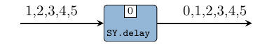</p></div></div><div class="top"><p class="src"><a id="v:comb22" class="def">comb22</a> <a href="src/ForSyDe.Atom.MoC.SY.Lib.html#comb22" class="link">Source</a> <a href="#v:comb22" class="selflink">#</a></p><div class="subs arguments"><p class="caption">Arguments</p><table><tr><td class="src">:: (a1 -&gt; a2 -&gt; (b1, b2))</td><td class="doc"><p>function on values</p></td></tr><tr><td class="src">-&gt; <a href="ForSyDe-Atom-MoC-SY.html#t:Signal" title="ForSyDe.Atom.MoC.SY">Signal</a> a1</td><td class="doc"><p>first input signal</p></td></tr><tr><td class="src">-&gt; <a href="ForSyDe-Atom-MoC-SY.html#t:Signal" title="ForSyDe.Atom.MoC.SY">Signal</a> a2</td><td class="doc"><p>second input signal</p></td></tr><tr><td class="src">-&gt; (<a href="ForSyDe-Atom-MoC-SY.html#t:Signal" title="ForSyDe.Atom.MoC.SY">Signal</a> b1, <a href="ForSyDe-Atom-MoC-SY.html#t:Signal" title="ForSyDe.Atom.MoC.SY">Signal</a> b2)</td><td class="doc"><p>two output signals</p></td></tr></table></div><div class="doc"><p><code>comb</code> processes map combinatorial functions on signals and take
 care of synchronization between input signals. It instantiates the
 <code>comb</code> pattern (see <code><a href="ForSyDe-Atom-MoC.html#v:comb22" title="ForSyDe.Atom.MoC">comb22</a></code>).</p><p>Constructors: <code>comb[1-4][1-4]</code>.</p><pre class="screen"><code class="prompt">&gt;&gt;&gt; </code><strong class="userinput"><code>let s1 = signal [1..]
</code></strong><code class="prompt">&gt;&gt;&gt; </code><strong class="userinput"><code>let s2 = signal [1,1,1,1,1]
</code></strong><code class="prompt">&gt;&gt;&gt; </code><strong class="userinput"><code>comb11 (+1) s2
</code></strong>{2,2,2,2,2}
<code class="prompt">&gt;&gt;&gt; </code><strong class="userinput"><code>comb22 ( b-&gt; (a+b,a-b)) s1 s2
</code></strong>({2,3,4,5,6},{0,1,2,3,4})
</pre><p>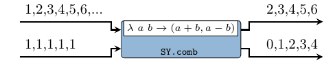</p></div></div><div class="top"><p class="src"><a id="v:reconfig22" class="def">reconfig22</a> <a href="src/ForSyDe.Atom.MoC.SY.Lib.html#reconfig22" class="link">Source</a> <a href="#v:reconfig22" class="selflink">#</a></p><div class="subs arguments"><p class="caption">Arguments</p><table><tr><td class="src">:: <a href="ForSyDe-Atom-MoC-SY.html#t:Signal" title="ForSyDe.Atom.MoC.SY">Signal</a> (a1 -&gt; a2 -&gt; (b1, b2))</td><td class="doc"><p>signal carrying functions</p></td></tr><tr><td class="src">-&gt; <a href="ForSyDe-Atom-MoC-SY.html#t:Signal" title="ForSyDe.Atom.MoC.SY">Signal</a> a1</td><td class="doc"><p>first input signal carrying arguments</p></td></tr><tr><td class="src">-&gt; <a href="ForSyDe-Atom-MoC-SY.html#t:Signal" title="ForSyDe.Atom.MoC.SY">Signal</a> a2</td><td class="doc"><p>second input signal carrying arguments</p></td></tr><tr><td class="src">-&gt; (<a href="ForSyDe-Atom-MoC-SY.html#t:Signal" title="ForSyDe.Atom.MoC.SY">Signal</a> b1, <a href="ForSyDe-Atom-MoC-SY.html#t:Signal" title="ForSyDe.Atom.MoC.SY">Signal</a> b2)</td><td class="doc"><p>two output signals</p></td></tr></table></div><div class="doc"><p><code>reconfig</code> creates an synchronous adaptive process where the
 first signal carries functions and the other carry the
 arguments. It instantiates the <code>reconfig</code> atom pattern (see
 <code><a href="ForSyDe-Atom-MoC.html#v:reconfig22" title="ForSyDe.Atom.MoC">reconfig22</a></code>).</p><p>Constructors: <code>reconfig[1-4][1-4]</code>.</p><pre class="screen"><code class="prompt">&gt;&gt;&gt; </code><strong class="userinput"><code>let sf = signal [(+1),(*2),(+1),(*2),(+1),(*2),(+1)]
</code></strong><code class="prompt">&gt;&gt;&gt; </code><strong class="userinput"><code>let s1 = signal [1..]
</code></strong><code class="prompt">&gt;&gt;&gt; </code><strong class="userinput"><code>reconfig11 sf s1
</code></strong>{2,4,4,8,6,12,8}
</pre><p>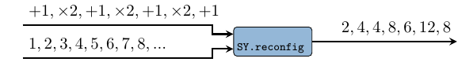</p></div></div><div class="top"><p class="src"><a id="v:constant2" class="def">constant2</a> <a href="src/ForSyDe.Atom.MoC.SY.Lib.html#constant2" class="link">Source</a> <a href="#v:constant2" class="selflink">#</a></p><div class="subs arguments"><p class="caption">Arguments</p><table><tr><td class="src">:: (b1, b2)</td><td class="doc"><p>values to be repeated</p></td></tr><tr><td class="src">-&gt; (<a href="ForSyDe-Atom-MoC-SY.html#t:Signal" title="ForSyDe.Atom.MoC.SY">Signal</a> b1, <a href="ForSyDe-Atom-MoC-SY.html#t:Signal" title="ForSyDe.Atom.MoC.SY">Signal</a> b2)</td><td class="doc"><p>generated signals</p></td></tr></table></div><div class="doc"><p>A signal generator which keeps a value constant. It
 is actually an instantiation of the <code>stated0X</code> constructor
 (check <code><a href="ForSyDe-Atom-MoC.html#v:stated22" title="ForSyDe.Atom.MoC">stated22</a></code>).</p><p>Constructors: <code>constant[1-4]</code>.</p><pre class="screen"><code class="prompt">&gt;&gt;&gt; </code><strong class="userinput"><code>let (s1, s2) = constant2 (1,2)
</code></strong><code class="prompt">&gt;&gt;&gt; </code><strong class="userinput"><code>takeS 3 s1
</code></strong>{1,1,1}
<code class="prompt">&gt;&gt;&gt; </code><strong class="userinput"><code>takeS 5 s2
</code></strong>{2,2,2,2,2}
</pre><p>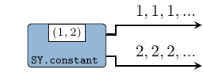</p></div></div><div class="top"><p class="src"><a id="v:generate2" class="def">generate2</a> <a href="src/ForSyDe.Atom.MoC.SY.Lib.html#generate2" class="link">Source</a> <a href="#v:generate2" class="selflink">#</a></p><div class="subs arguments"><p class="caption">Arguments</p><table><tr><td class="src">:: (b1 -&gt; b2 -&gt; (b1, b2))</td><td class="doc"><p>function to generate next value</p></td></tr><tr><td class="src">-&gt; (b1, b2)</td><td class="doc"><p>kernel values</p></td></tr><tr><td class="src">-&gt; (<a href="ForSyDe-Atom-MoC-SY.html#t:Signal" title="ForSyDe.Atom.MoC.SY">Signal</a> b1, <a href="ForSyDe-Atom-MoC-SY.html#t:Signal" title="ForSyDe.Atom.MoC.SY">Signal</a> b2)</td><td class="doc"><p>generated signals</p></td></tr></table></div><div class="doc"><p>A signal generator based on a function and a kernel value. It
 is actually an instantiation of the <code>stated0X</code> constructor
 (check <code><a href="ForSyDe-Atom-MoC.html#v:stated22" title="ForSyDe.Atom.MoC">stated22</a></code>).</p><p>Constructors: <code>generate[1-4]</code>.</p><pre class="screen"><code class="prompt">&gt;&gt;&gt; </code><strong class="userinput"><code>let (s1,s2) = generate2 ( b -&gt; (a+1,b+2)) (1,2)
</code></strong><code class="prompt">&gt;&gt;&gt; </code><strong class="userinput"><code>takeS 5 s1
</code></strong>{1,2,3,4,5}
<code class="prompt">&gt;&gt;&gt; </code><strong class="userinput"><code>takeS 7 s2
</code></strong>{2,4,6,8,10,12,14}
</pre><p>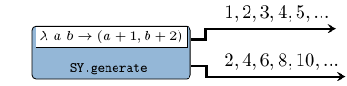</p></div></div><div class="top"><p class="src"><a id="v:stated22" class="def">stated22</a> <a href="src/ForSyDe.Atom.MoC.SY.Lib.html#stated22" class="link">Source</a> <a href="#v:stated22" class="selflink">#</a></p><div class="subs arguments"><p class="caption">Arguments</p><table><tr><td class="src">:: (b1 -&gt; b2 -&gt; a1 -&gt; a2 -&gt; (b1, b2))</td><td class="doc"><p>next state function</p></td></tr><tr><td class="src">-&gt; (b1, b2)</td><td class="doc"><p>initial state values</p></td></tr><tr><td class="src">-&gt; <a href="ForSyDe-Atom-MoC-SY.html#t:Signal" title="ForSyDe.Atom.MoC.SY">Signal</a> a1</td><td class="doc"><p>first input signal</p></td></tr><tr><td class="src">-&gt; <a href="ForSyDe-Atom-MoC-SY.html#t:Signal" title="ForSyDe.Atom.MoC.SY">Signal</a> a2</td><td class="doc"><p>second input signal</p></td></tr><tr><td class="src">-&gt; (<a href="ForSyDe-Atom-MoC-SY.html#t:Signal" title="ForSyDe.Atom.MoC.SY">Signal</a> b1, <a href="ForSyDe-Atom-MoC-SY.html#t:Signal" title="ForSyDe.Atom.MoC.SY">Signal</a> b2)</td><td class="doc"><p>output signals</p></td></tr></table></div><div class="doc"><p><code>stated</code> is a state machine without an output decoder. It is an
 instantiation of the <code>state</code> MoC constructor
 (see <code><a href="ForSyDe-Atom-MoC.html#v:stated22" title="ForSyDe.Atom.MoC">stated22</a></code>).</p><p>Constructors: <code>stated[1-4][1-4]</code>.</p><pre class="screen"><code class="prompt">&gt;&gt;&gt; </code><strong class="userinput"><code>let s1 = signal [1,2,3,4,5]
</code></strong><code class="prompt">&gt;&gt;&gt; </code><strong class="userinput"><code>stated11 (+) 1 s1
</code></strong>{1,2,4,7,11,16}
</pre><p></p></div></div><div class="top"><p class="src"><a id="v:state22" class="def">state22</a> <a href="src/ForSyDe.Atom.MoC.SY.Lib.html#state22" class="link">Source</a> <a href="#v:state22" class="selflink">#</a></p><div class="subs arguments"><p class="caption">Arguments</p><table><tr><td class="src">:: (b1 -&gt; b2 -&gt; a1 -&gt; a2 -&gt; (b1, b2))</td><td class="doc"><p>next state function</p></td></tr><tr><td class="src">-&gt; (b1, b2)</td><td class="doc"><p>initial state values</p></td></tr><tr><td class="src">-&gt; <a href="ForSyDe-Atom-MoC-SY.html#t:Signal" title="ForSyDe.Atom.MoC.SY">Signal</a> a1</td><td class="doc"><p>first input signal</p></td></tr><tr><td class="src">-&gt; <a href="ForSyDe-Atom-MoC-SY.html#t:Signal" title="ForSyDe.Atom.MoC.SY">Signal</a> a2</td><td class="doc"><p>second input signal</p></td></tr><tr><td class="src">-&gt; (<a href="ForSyDe-Atom-MoC-SY.html#t:Signal" title="ForSyDe.Atom.MoC.SY">Signal</a> b1, <a href="ForSyDe-Atom-MoC-SY.html#t:Signal" title="ForSyDe.Atom.MoC.SY">Signal</a> b2)</td><td class="doc"><p>output signals</p></td></tr></table></div><div class="doc"><p><code>state</code> is a state machine without an output decoder. It is an
 instantiation of the <code>stated</code> MoC constructor
 (see <code><a href="ForSyDe-Atom-MoC.html#v:state22" title="ForSyDe.Atom.MoC">state22</a></code>).</p><p>Constructors: <code>state[1-4][1-4]</code>.</p><pre class="screen"><code class="prompt">&gt;&gt;&gt; </code><strong class="userinput"><code>let s1 = signal [1,2,3,4,5]
</code></strong><code class="prompt">&gt;&gt;&gt; </code><strong class="userinput"><code>state11 (+) 1 s1
</code></strong>{2,4,7,11,16}
</pre><p>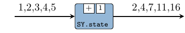</p></div></div><div class="top"><p class="src"><a id="v:moore22" class="def">moore22</a> <a href="src/ForSyDe.Atom.MoC.SY.Lib.html#moore22" class="link">Source</a> <a href="#v:moore22" class="selflink">#</a></p><div class="subs arguments"><p class="caption">Arguments</p><table><tr><td class="src">:: (st -&gt; a1 -&gt; a2 -&gt; st)</td><td class="doc"><p>next state function</p></td></tr><tr><td class="src">-&gt; (st -&gt; (b1, b2))</td><td class="doc"><p>output decoder</p></td></tr><tr><td class="src">-&gt; st</td><td class="doc"><p>initial state</p></td></tr><tr><td class="src">-&gt; <a href="ForSyDe-Atom-MoC-SY.html#t:Signal" title="ForSyDe.Atom.MoC.SY">Signal</a> a1</td><td class="doc empty">&nbsp;</td></tr><tr><td class="src">-&gt; <a href="ForSyDe-Atom-MoC-SY.html#t:Signal" title="ForSyDe.Atom.MoC.SY">Signal</a> a2</td><td class="doc empty">&nbsp;</td></tr><tr><td class="src">-&gt; (<a href="ForSyDe-Atom-MoC-SY.html#t:Signal" title="ForSyDe.Atom.MoC.SY">Signal</a> b1, <a href="ForSyDe-Atom-MoC-SY.html#t:Signal" title="ForSyDe.Atom.MoC.SY">Signal</a> b2)</td><td class="doc empty">&nbsp;</td></tr></table></div><div class="doc"><p><code>moore</code> processes model Moore state machines. It is an
 instantiation of the <code>moore</code> MoC constructor
 (see <code><a href="ForSyDe-Atom-MoC.html#v:moore22" title="ForSyDe.Atom.MoC">moore22</a></code>).</p><p>Constructors: <code>moore[1-4][1-4]</code>.</p><pre class="screen"><code class="prompt">&gt;&gt;&gt; </code><strong class="userinput"><code>let s1 = signal [1,2,3,4,5]
</code></strong><code class="prompt">&gt;&gt;&gt; </code><strong class="userinput"><code>moore11 (+) (+1) 1 s1
</code></strong>{2,3,5,8,12,17}
</pre><p></p></div></div><div class="top"><p class="src"><a id="v:mealy22" class="def">mealy22</a> <a href="src/ForSyDe.Atom.MoC.SY.Lib.html#mealy22" class="link">Source</a> <a href="#v:mealy22" class="selflink">#</a></p><div class="subs arguments"><p class="caption">Arguments</p><table><tr><td class="src">:: (st -&gt; a1 -&gt; a2 -&gt; st)</td><td class="doc"><p>next state function</p></td></tr><tr><td class="src">-&gt; (st -&gt; a1 -&gt; a2 -&gt; (b1, b2))</td><td class="doc"><p>outpt decoder</p></td></tr><tr><td class="src">-&gt; st</td><td class="doc"><p>initial state</p></td></tr><tr><td class="src">-&gt; <a href="ForSyDe-Atom-MoC-SY.html#t:Signal" title="ForSyDe.Atom.MoC.SY">Signal</a> a1</td><td class="doc empty">&nbsp;</td></tr><tr><td class="src">-&gt; <a href="ForSyDe-Atom-MoC-SY.html#t:Signal" title="ForSyDe.Atom.MoC.SY">Signal</a> a2</td><td class="doc empty">&nbsp;</td></tr><tr><td class="src">-&gt; (<a href="ForSyDe-Atom-MoC-SY.html#t:Signal" title="ForSyDe.Atom.MoC.SY">Signal</a> b1, <a href="ForSyDe-Atom-MoC-SY.html#t:Signal" title="ForSyDe.Atom.MoC.SY">Signal</a> b2)</td><td class="doc empty">&nbsp;</td></tr></table></div><div class="doc"><p><code>mealy</code> processes model Mealy state machines. It is an
 instantiation of the <code>mealy</code> MoC constructor
 (see <code><a href="ForSyDe-Atom-MoC.html#v:mealy22" title="ForSyDe.Atom.MoC">mealy22</a></code>).</p><p>Constructors: <code>mealy[1-4][1-4]</code>.</p><pre class="screen"><code class="prompt">&gt;&gt;&gt; </code><strong class="userinput"><code>let s1 = signal [1,2,3,4,5]
</code></strong><code class="prompt">&gt;&gt;&gt; </code><strong class="userinput"><code>mealy11 (+) (-) 1 s1
</code></strong>{0,0,1,3,6}
</pre><p>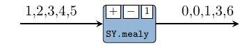</p></div></div><a href="#g:5" id="g:5"><h2>Predicate behavior</h2></a><div class="doc"><p>These processes manipulate the behavior of a signal based on
 predicates on their status.</p></div><div class="top"><p class="src"><a id="v:when" class="def">when</a> <a href="src/ForSyDe.Atom.MoC.SY.Lib.html#when" class="link">Source</a> <a href="#v:when" class="selflink">#</a></p><div class="subs arguments"><p class="caption">Arguments</p><table><tr><td class="src">:: <a href="ForSyDe-Atom-MoC-SY.html#t:Signal" title="ForSyDe.Atom.MoC.SY">Signal</a> (<a href="ForSyDe-Atom-ExB-Absent.html#t:AbstExt" title="ForSyDe.Atom.ExB.Absent">AbstExt</a> <a href="../base-4.11.1.0/Data-Bool.html#t:Bool" title="Data.Bool">Bool</a>)</td><td class="doc"><p>Signal of predicates</p></td></tr><tr><td class="src">-&gt; <a href="ForSyDe-Atom-MoC-SY.html#t:Signal" title="ForSyDe.Atom.MoC.SY">Signal</a> (<a href="ForSyDe-Atom-ExB-Absent.html#t:AbstExt" title="ForSyDe.Atom.ExB.Absent">AbstExt</a> a)</td><td class="doc"><p>Input signal</p></td></tr><tr><td class="src">-&gt; <a href="ForSyDe-Atom-MoC-SY.html#t:Signal" title="ForSyDe.Atom.MoC.SY">Signal</a> (<a href="ForSyDe-Atom-ExB-Absent.html#t:AbstExt" title="ForSyDe.Atom.ExB.Absent">AbstExt</a> a)</td><td class="doc"><p>Output signal</p></td></tr></table></div><div class="doc"><p>This process predicates the existence of values in a signal based
 on a signal of boolean values (conditions). It is similar to the
 <code>when</code> construct in the synchronous language Lustre
 <a href="ForSyDe-Atom.html#halbwachs91">[Halbwachs91]</a>, based on which clock
 calculus can be performed.</p><p><strong>OBS:</strong> this process assumes that all signals carry
 absent-extended values, which is appropriate in describing
 multi-clock systems. For a version which inputs signals of
 non-extended values, check <code><a href="ForSyDe-Atom-MoC-SY.html#v:when-39-" title="ForSyDe.Atom.MoC.SY">when'</a></code>.</p><pre class="screen"><code class="prompt">&gt;&gt;&gt; </code><strong class="userinput"><code>let s1   = (signal . map Prst) [1,2,3,4,5]
</code></strong><code class="prompt">&gt;&gt;&gt; </code><strong class="userinput"><code>let pred = (signal . map Prst) [False,False,False,True,True]
</code></strong><code class="prompt">&gt;&gt;&gt; </code><strong class="userinput"><code>when pred s1
</code></strong>{&#10178;,&#10178;,&#10178;,4,5}
</pre><p>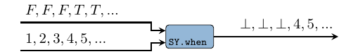</p></div></div><div class="top"><p class="src"><a id="v:when-39-" class="def">when'</a> <a href="src/ForSyDe.Atom.MoC.SY.Lib.html#when%27" class="link">Source</a> <a href="#v:when-39-" class="selflink">#</a></p><div class="subs arguments"><p class="caption">Arguments</p><table><tr><td class="src">:: <a href="ForSyDe-Atom-MoC-SY.html#t:Signal" title="ForSyDe.Atom.MoC.SY">Signal</a> <a href="../base-4.11.1.0/Data-Bool.html#t:Bool" title="Data.Bool">Bool</a></td><td class="doc"><p>Signal of predicates</p></td></tr><tr><td class="src">-&gt; <a href="ForSyDe-Atom-MoC-SY.html#t:Signal" title="ForSyDe.Atom.MoC.SY">Signal</a> a</td><td class="doc"><p>Input signal</p></td></tr><tr><td class="src">-&gt; <a href="ForSyDe-Atom-MoC-SY.html#t:Signal" title="ForSyDe.Atom.MoC.SY">Signal</a> (<a href="ForSyDe-Atom-ExB-Absent.html#t:AbstExt" title="ForSyDe.Atom.ExB.Absent">AbstExt</a> a)</td><td class="doc"><p>Output signal</p></td></tr></table></div><div class="doc"><p>Same as <code><a href="ForSyDe-Atom-MoC-SY.html#v:when" title="ForSyDe.Atom.MoC.SY">when</a></code> but inputs signals of non-extended values.</p><pre class="screen"><code class="prompt">&gt;&gt;&gt; </code><strong class="userinput"><code>let s1   = signal [1,2,3,4,5]
</code></strong><code class="prompt">&gt;&gt;&gt; </code><strong class="userinput"><code>let pred = signal [False,False,False,True,True]
</code></strong><code class="prompt">&gt;&gt;&gt; </code><strong class="userinput"><code>when' pred s1
</code></strong>{&#10178;,&#10178;,&#10178;,4,5}
</pre></div></div><div class="top"><p class="src"><a id="v:is" class="def">is</a> :: <a href="ForSyDe-Atom-MoC-SY.html#t:Signal" title="ForSyDe.Atom.MoC.SY">Signal</a> (<a href="ForSyDe-Atom-ExB-Absent.html#t:AbstExt" title="ForSyDe.Atom.ExB.Absent">AbstExt</a> a) -&gt; (a -&gt; <a href="../base-4.11.1.0/Data-Bool.html#t:Bool" title="Data.Bool">Bool</a>) -&gt; <a href="ForSyDe-Atom-MoC-SY.html#t:Signal" title="ForSyDe.Atom.MoC.SY">Signal</a> (<a href="ForSyDe-Atom-ExB-Absent.html#t:AbstExt" title="ForSyDe.Atom.ExB.Absent">AbstExt</a> <a href="../base-4.11.1.0/Data-Bool.html#t:Bool" title="Data.Bool">Bool</a>) <a href="src/ForSyDe.Atom.MoC.SY.Lib.html#is" class="link">Source</a> <a href="#v:is" class="selflink">#</a></p><div class="doc"><p>Simple wrapper for applying a predicate function on a signal of
 absent-extended events.</p><pre class="screen"><code class="prompt">&gt;&gt;&gt; </code><strong class="userinput"><code>let s1   = signal $ map Prst [1,2,3,4,5]
</code></strong><code class="prompt">&gt;&gt;&gt; </code><strong class="userinput"><code>s1 `is` (&gt;3)
</code></strong>{False,False,False,True,True}
</pre></div></div><div class="top"><p class="src"><a id="v:whenPresent" class="def">whenPresent</a> :: <a href="ForSyDe-Atom-MoC-SY.html#t:Signal" title="ForSyDe.Atom.MoC.SY">Signal</a> (<a href="ForSyDe-Atom-ExB-Absent.html#t:AbstExt" title="ForSyDe.Atom.ExB.Absent">AbstExt</a> a1) -&gt; <a href="ForSyDe-Atom-MoC-SY.html#t:Signal" title="ForSyDe.Atom.MoC.SY">Signal</a> (<a href="ForSyDe-Atom-ExB-Absent.html#t:AbstExt" title="ForSyDe.Atom.ExB.Absent">AbstExt</a> a2) -&gt; <a href="ForSyDe-Atom-MoC-SY.html#t:Signal" title="ForSyDe.Atom.MoC.SY">Signal</a> (<a href="ForSyDe-Atom-ExB-Absent.html#t:AbstExt" title="ForSyDe.Atom.ExB.Absent">AbstExt</a> a2) <a href="src/ForSyDe.Atom.MoC.SY.Lib.html#whenPresent" class="link">Source</a> <a href="#v:whenPresent" class="selflink">#</a></p><div class="doc"><p>Same as <code><a href="ForSyDe-Atom-MoC-SY.html#v:when" title="ForSyDe.Atom.MoC.SY">when</a></code> but triggering the output events merely based on
 the presence of the first input rather than a predicate function.</p><pre class="screen"><code class="prompt">&gt;&gt;&gt; </code><strong class="userinput"><code>let s1   = signal $ map Prst [1,2,3,4,5]
</code></strong><code class="prompt">&gt;&gt;&gt; </code><strong class="userinput"><code>let sp   = signal [Prst 1, Prst 1, Abst, Prst 1, Abst]
</code></strong><code class="prompt">&gt;&gt;&gt; </code><strong class="userinput"><code>whenPresent sp s1
</code></strong>{1,2,&#10178;,4,&#10178;}
</pre></div></div><div class="top"><p class="src"><a id="v:filter" class="def">filter</a> <a href="src/ForSyDe.Atom.MoC.SY.Lib.html#filter" class="link">Source</a> <a href="#v:filter" class="selflink">#</a></p><div class="subs arguments"><p class="caption">Arguments</p><table><tr><td class="src">:: (a -&gt; <a href="../base-4.11.1.0/Data-Bool.html#t:Bool" title="Data.Bool">Bool</a>)</td><td class="doc"><p>Predicate function</p></td></tr><tr><td class="src">-&gt; <a href="ForSyDe-Atom-MoC-SY.html#t:Signal" title="ForSyDe.Atom.MoC.SY">Signal</a> (<a href="ForSyDe-Atom-ExB-Absent.html#t:AbstExt" title="ForSyDe.Atom.ExB.Absent">AbstExt</a> a)</td><td class="doc"><p>Input signal</p></td></tr><tr><td class="src">-&gt; <a href="ForSyDe-Atom-MoC-SY.html#t:Signal" title="ForSyDe.Atom.MoC.SY">Signal</a> (<a href="ForSyDe-Atom-ExB-Absent.html#t:AbstExt" title="ForSyDe.Atom.ExB.Absent">AbstExt</a> a)</td><td class="doc"><p>Output signal</p></td></tr></table></div><div class="doc"><p>Filters out values to <code><a href="ForSyDe-Atom-ExB-Absent.html#v:Abst" title="ForSyDe.Atom.ExB.Absent">Abst</a></code> if they do not fulfill a predicate
 function.</p><p><strong>OBS:</strong> this process assumes that all signals carry
 absent-extended values, which is appropriate in describing
 multi-clock systems. For a version which inputs signals of
 non-extended values, check <code><a href="ForSyDe-Atom-MoC-SY.html#v:filter-39-" title="ForSyDe.Atom.MoC.SY">filter'</a></code>.</p><pre class="screen"><code class="prompt">&gt;&gt;&gt; </code><strong class="userinput"><code>let s1   = (signal . map Prst) [1,2,3,4,5]
</code></strong><code class="prompt">&gt;&gt;&gt; </code><strong class="userinput"><code>filter (&gt;3) s1
</code></strong>{&#10178;,&#10178;,&#10178;,4,5}
</pre><p>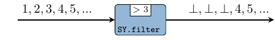</p></div></div><div class="top"><p class="src"><a id="v:filter-39-" class="def">filter'</a> <a href="src/ForSyDe.Atom.MoC.SY.Lib.html#filter%27" class="link">Source</a> <a href="#v:filter-39-" class="selflink">#</a></p><div class="subs arguments"><p class="caption">Arguments</p><table><tr><td class="src">:: (a -&gt; <a href="../base-4.11.1.0/Data-Bool.html#t:Bool" title="Data.Bool">Bool</a>)</td><td class="doc"><p>Predicate function</p></td></tr><tr><td class="src">-&gt; <a href="ForSyDe-Atom-MoC-SY.html#t:Signal" title="ForSyDe.Atom.MoC.SY">Signal</a> a</td><td class="doc"><p>Input signal</p></td></tr><tr><td class="src">-&gt; <a href="ForSyDe-Atom-MoC-SY.html#t:Signal" title="ForSyDe.Atom.MoC.SY">Signal</a> (<a href="ForSyDe-Atom-ExB-Absent.html#t:AbstExt" title="ForSyDe.Atom.ExB.Absent">AbstExt</a> a)</td><td class="doc"><p>Output signal</p></td></tr></table></div><div class="doc"><p>Same as <code><a href="ForSyDe-Atom-MoC-SY.html#v:filter" title="ForSyDe.Atom.MoC.SY">filter</a></code> but inputs signals of non-extended values.</p><pre class="screen"><code class="prompt">&gt;&gt;&gt; </code><strong class="userinput"><code>let s1   = signal [1,2,3,4,5]
</code></strong><code class="prompt">&gt;&gt;&gt; </code><strong class="userinput"><code>filter' (&gt;3) s1
</code></strong>{&#10178;,&#10178;,&#10178;,4,5}
</pre></div></div><div class="top"><p class="src"><a id="v:fill" class="def">fill</a> <a href="src/ForSyDe.Atom.MoC.SY.Lib.html#fill" class="link">Source</a> <a href="#v:fill" class="selflink">#</a></p><div class="subs arguments"><p class="caption">Arguments</p><table><tr><td class="src">:: a</td><td class="doc"><p>Value to fill with</p></td></tr><tr><td class="src">-&gt; <a href="ForSyDe-Atom-MoC-SY.html#t:Signal" title="ForSyDe.Atom.MoC.SY">Signal</a> (<a href="ForSyDe-Atom-ExB-Absent.html#t:AbstExt" title="ForSyDe.Atom.ExB.Absent">AbstExt</a> a)</td><td class="doc"><p>Input</p></td></tr><tr><td class="src">-&gt; <a href="ForSyDe-Atom-MoC-SY.html#t:Signal" title="ForSyDe.Atom.MoC.SY">Signal</a> a</td><td class="doc"><p>Output</p></td></tr></table></div><div class="doc"><p>Fills absent events with a pre-defined value.</p><pre class="screen"><code class="prompt">&gt;&gt;&gt; </code><strong class="userinput"><code>let s1   = signal [Abst, Abst, Prst 1, Prst 2, Abst, Prst 3]
</code></strong><code class="prompt">&gt;&gt;&gt; </code><strong class="userinput"><code>fill 0 s1
</code></strong>{0,0,1,2,0,3}
</pre><p>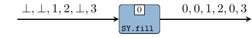</p></div></div><div class="top"><p class="src"><a id="v:hold" class="def">hold</a> <a href="src/ForSyDe.Atom.MoC.SY.Lib.html#hold" class="link">Source</a> <a href="#v:hold" class="selflink">#</a></p><div class="subs arguments"><p class="caption">Arguments</p><table><tr><td class="src">:: a</td><td class="doc"><p>Value to fill with in case there was no previous value</p></td></tr><tr><td class="src">-&gt; <a href="ForSyDe-Atom-MoC-SY.html#t:Signal" title="ForSyDe.Atom.MoC.SY">Signal</a> (<a href="ForSyDe-Atom-ExB-Absent.html#t:AbstExt" title="ForSyDe.Atom.ExB.Absent">AbstExt</a> a)</td><td class="doc"><p>Input</p></td></tr><tr><td class="src">-&gt; <a href="ForSyDe-Atom-MoC-SY.html#t:Signal" title="ForSyDe.Atom.MoC.SY">Signal</a> a</td><td class="doc"><p>Output</p></td></tr></table></div><div class="doc"><p>Similar to <code><a href="ForSyDe-Atom-MoC-SY.html#v:fill" title="ForSyDe.Atom.MoC.SY">fill</a></code>, but holds the last non-absent value if there
 was one. It implements a <code>state</code> pattern (see <code><a href="ForSyDe-Atom-MoC.html#v:state22" title="ForSyDe.Atom.MoC">state22</a></code>).</p><pre class="screen"><code class="prompt">&gt;&gt;&gt; </code><strong class="userinput"><code>let s1   = signal [Abst, Abst, Prst 1, Prst 2, Abst, Prst 3]
</code></strong><code class="prompt">&gt;&gt;&gt; </code><strong class="userinput"><code>hold 0 s1
</code></strong>{0,0,1,2,2,3}
</pre><p></p></div></div><div class="top"><p class="src"><a id="v:reactAbst2" class="def">reactAbst2</a> <a href="src/ForSyDe.Atom.MoC.SY.Lib.html#reactAbst2" class="link">Source</a> <a href="#v:reactAbst2" class="selflink">#</a></p><div class="subs arguments"><p class="caption">Arguments</p><table><tr><td class="src">:: (<a href="ForSyDe-Atom-MoC-SY.html#t:Signal" title="ForSyDe.Atom.MoC.SY">Signal</a> (<a href="ForSyDe-Atom-ExB-Absent.html#t:AbstExt" title="ForSyDe.Atom.ExB.Absent">AbstExt</a> a1) -&gt; <a href="ForSyDe-Atom-MoC-SY.html#t:Signal" title="ForSyDe.Atom.MoC.SY">Signal</a> (<a href="ForSyDe-Atom-ExB-Absent.html#t:AbstExt" title="ForSyDe.Atom.ExB.Absent">AbstExt</a> a2) -&gt; <a href="ForSyDe-Atom-MoC-SY.html#t:Signal" title="ForSyDe.Atom.MoC.SY">Signal</a> b)</td><td class="doc"><p>process which degrades the absent extension,
 e.g. holds present values</p></td></tr><tr><td class="src">-&gt; <a href="ForSyDe-Atom-MoC-SY.html#t:Signal" title="ForSyDe.Atom.MoC.SY">Signal</a> (<a href="ForSyDe-Atom-ExB-Absent.html#t:AbstExt" title="ForSyDe.Atom.ExB.Absent">AbstExt</a> a1)</td><td class="doc empty">&nbsp;</td></tr><tr><td class="src">-&gt; <a href="ForSyDe-Atom-MoC-SY.html#t:Signal" title="ForSyDe.Atom.MoC.SY">Signal</a> (<a href="ForSyDe-Atom-ExB-Absent.html#t:AbstExt" title="ForSyDe.Atom.ExB.Absent">AbstExt</a> a2)</td><td class="doc empty">&nbsp;</td></tr><tr><td class="src">-&gt; <a href="ForSyDe-Atom-MoC-SY.html#t:Signal" title="ForSyDe.Atom.MoC.SY">Signal</a> (<a href="ForSyDe-Atom-ExB-Absent.html#t:AbstExt" title="ForSyDe.Atom.ExB.Absent">AbstExt</a> b)</td><td class="doc"><p>absent-extended signal, properly reacting to the inputs</p></td></tr></table></div><div class="doc"><p>Creates a wrapper enabling a reactive behvior to absent-extended
 signals for processes which would otherwise degrade the
 absent-extension (e.g. state machines with <code>ignore22</code> behavior).</p><p>Constructors: <code>reactAbst[1-4]</code>.</p><pre class="screen"><code class="prompt">&gt;&gt;&gt; </code><strong class="userinput"><code>let s1 = readSignal &quot;{1,1,1,_,1,_,1}&quot; :: Signal (AbstExt Int)
</code></strong><code class="prompt">&gt;&gt;&gt; </code><strong class="userinput"><code>let proc = stated11 (B.ignore11 (+)) 0
</code></strong><code class="prompt">&gt;&gt;&gt; </code><strong class="userinput"><code>proc s1
</code></strong>{0,1,2,3,3,4,4,5}
<code class="prompt">&gt;&gt;&gt; </code><strong class="userinput"><code>reactAbst1 proc s1
</code></strong>{0,1,2,&#10178;,3,&#10178;,4} 
</pre><p>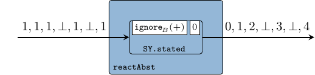</p></div></div><a href="#g:6" id="g:6"><h1>Interfaces</h1></a><div class="top"><p class="src"><a id="v:toDE2" class="def">toDE2</a> <a href="src/ForSyDe.Atom.MoC.SY.Interface.html#toDE2" class="link">Source</a> <a href="#v:toDE2" class="selflink">#</a></p><div class="subs arguments"><p class="caption">Arguments</p><table><tr><td class="src">:: <a href="ForSyDe-Atom-MoC-SY.html#t:Signal" title="ForSyDe.Atom.MoC.SY">Signal</a> <a href="ForSyDe-Atom-MoC-TimeStamp.html#t:TimeStamp" title="ForSyDe.Atom.MoC.TimeStamp">TimeStamp</a></td><td class="doc"><p>SY signal carrying <code><a href="ForSyDe-Atom-MoC-DE.html#v:DE" title="ForSyDe.Atom.MoC.DE">DE</a></code> timestamps</p></td></tr><tr><td class="src">-&gt; <a href="ForSyDe-Atom-MoC-SY.html#t:Signal" title="ForSyDe.Atom.MoC.SY">Signal</a> a</td><td class="doc"><p>first input SY signal</p></td></tr><tr><td class="src">-&gt; <a href="ForSyDe-Atom-MoC-SY.html#t:Signal" title="ForSyDe.Atom.MoC.SY">Signal</a> b</td><td class="doc"><p>second input SY signal</p></td></tr><tr><td class="src">-&gt; (<a href="ForSyDe-Atom-MoC-DE.html#t:Signal" title="ForSyDe.Atom.MoC.DE">Signal</a> a, <a href="ForSyDe-Atom-MoC-DE.html#t:Signal" title="ForSyDe.Atom.MoC.DE">Signal</a> b)</td><td class="doc"><p>two output <code><a href="ForSyDe-Atom-MoC-DE.html#v:DE" title="ForSyDe.Atom.MoC.DE">DE</a></code> signals</p></td></tr></table></div><div class="doc"><p>Wraps explicit timestamps to a (set of) <code><a href="ForSyDe-Atom-MoC-SY.html#v:SY" title="ForSyDe.Atom.MoC.SY">SY</a></code>
 signal(s), rendering the equivalent synchronized
 <code><a href="ForSyDe-Atom-MoC-DE.html#v:DE" title="ForSyDe.Atom.MoC.DE">DE</a></code> signal(s).</p><p>Constructors: <code>toDE</code>, <code>toDE2</code>, <code>toDE3</code>, <code>toDE4</code>.</p><pre class="screen"><code class="prompt">&gt;&gt;&gt; </code><strong class="userinput"><code>let s1 = SY.signal [0,3,4,6,9]
</code></strong><code class="prompt">&gt;&gt;&gt; </code><strong class="userinput"><code>let s2 = SY.signal [1,2,3,4,5]
</code></strong><code class="prompt">&gt;&gt;&gt; </code><strong class="userinput"><code>toDE s1 s2
</code></strong>{ 1 @0s, 2 @3s, 3 @4s, 4 @6s, 5 @9s}
</pre><p></p></div></div><div class="top"><p class="src"><a id="v:toSDF2" class="def">toSDF2</a> :: <a href="ForSyDe-Atom-MoC-SY.html#t:Signal" title="ForSyDe.Atom.MoC.SY">Signal</a> a -&gt; <a href="ForSyDe-Atom-MoC-SY.html#t:Signal" title="ForSyDe.Atom.MoC.SY">Signal</a> b -&gt; (<a href="ForSyDe-Atom-MoC-SDF.html#t:Signal" title="ForSyDe.Atom.MoC.SDF">Signal</a> a, <a href="ForSyDe-Atom-MoC-SDF.html#t:Signal" title="ForSyDe.Atom.MoC.SDF">Signal</a> b) <a href="src/ForSyDe.Atom.MoC.SY.Interface.html#toSDF2" class="link">Source</a> <a href="#v:toSDF2" class="selflink">#</a></p><div class="doc"><p>Transforms a (set of) <code><a href="ForSyDe-Atom-MoC-SY.html#v:SY" title="ForSyDe.Atom.MoC.SY">SY</a></code> signal(s) into the
 equivalent <code><a href="ForSyDe-Atom-MoC-SDF.html#v:SDF" title="ForSyDe.Atom.MoC.SDF">SDF</a></code> signal(s). The only change is
 the event consructor. The total order of SY is interpreted as
 partial order by the next SDF process downstream.</p><p>Constructors: <code>toSDF</code>, <code>toSDF2</code>, <code>toSDF3</code>, <code>toSDF4</code>.</p><pre class="screen"><code class="prompt">&gt;&gt;&gt; </code><strong class="userinput"><code>let s = SY.signal [1,2,3,4,5]
</code></strong><code class="prompt">&gt;&gt;&gt; </code><strong class="userinput"><code>toSDF s
</code></strong>{1,2,3,4,5}
</pre><p></p></div></div><div class="top"><p class="src"><a id="v:zipx" class="def">zipx</a> :: <a href="ForSyDe-Atom-Skeleton-Vector.html#t:Vector" title="ForSyDe.Atom.Skeleton.Vector">Vector</a> (<a href="ForSyDe-Atom-MoC-SY.html#t:Signal" title="ForSyDe.Atom.MoC.SY">Signal</a> a) -&gt; <a href="ForSyDe-Atom-MoC-SY.html#t:Signal" title="ForSyDe.Atom.MoC.SY">Signal</a> (<a href="ForSyDe-Atom-Skeleton-Vector.html#t:Vector" title="ForSyDe.Atom.Skeleton.Vector">Vector</a> a) <a href="src/ForSyDe.Atom.MoC.SY.Interface.html#zipx" class="link">Source</a> <a href="#v:zipx" class="selflink">#</a></p><div class="doc"><p>Synchronizes all the signals contained by a vector and zips them
 into one signal of vectors. It instantiates the
 <code><a href="ForSyDe-Atom-Skeleton-Vector.html#v:zipx" title="ForSyDe.Atom.Skeleton.Vector">zipx</a></code> skeleton.</p><pre class="screen"><code class="prompt">&gt;&gt;&gt; </code><strong class="userinput"><code>let s1 = SY.signal [1,2,3,4,5]
</code></strong><code class="prompt">&gt;&gt;&gt; </code><strong class="userinput"><code>let s2 = SY.signal [11,12,13,14,15]
</code></strong><code class="prompt">&gt;&gt;&gt; </code><strong class="userinput"><code>let v1 = V.vector [s1,s1,s2,s2]
</code></strong><code class="prompt">&gt;&gt;&gt; </code><strong class="userinput"><code>v1
</code></strong>&lt;{1,2,3,4,5},{1,2,3,4,5},{11,12,13,14,15},{11,12,13,14,15}&gt;
<code class="prompt">&gt;&gt;&gt; </code><strong class="userinput"><code>zipx v1
</code></strong>{&lt;1,1,11,11&gt;,&lt;2,2,12,12&gt;,&lt;3,3,13,13&gt;,&lt;4,4,14,14&gt;,&lt;5,5,15,15&gt;}
</pre><p>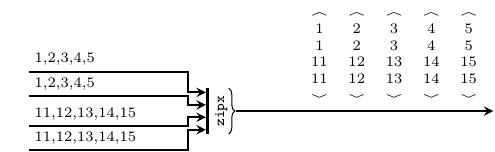</p></div></div><div class="top"><p class="src"><a id="v:unzipx" class="def">unzipx</a> :: <a href="../base-4.11.1.0/Prelude.html#t:Integer" title="Prelude">Integer</a> -&gt; <a href="ForSyDe-Atom-MoC-SY.html#t:Signal" title="ForSyDe.Atom.MoC.SY">Signal</a> (<a href="ForSyDe-Atom-Skeleton-Vector.html#t:Vector" title="ForSyDe.Atom.Skeleton.Vector">Vector</a> a) -&gt; <a href="ForSyDe-Atom-Skeleton-Vector.html#t:Vector" title="ForSyDe.Atom.Skeleton.Vector">Vector</a> (<a href="ForSyDe-Atom-MoC-SY.html#t:Signal" title="ForSyDe.Atom.MoC.SY">Signal</a> a) <a href="src/ForSyDe.Atom.MoC.SY.Interface.html#unzipx" class="link">Source</a> <a href="#v:unzipx" class="selflink">#</a></p><div class="doc"><p>Unzips the vectors carried by a signal into a vector of
 signals. It instantiates the <code><a href="ForSyDe-Atom-Skeleton-Vector.html#v:unzipx" title="ForSyDe.Atom.Skeleton.Vector">unzipx</a></code>
 skeleton. To avoid infinite recurrence, the user needs to provide
 the length of the output vector.</p><pre class="screen"><code class="prompt">&gt;&gt;&gt; </code><strong class="userinput"><code>let v1 = V.vector [1,2,3,4]
</code></strong><code class="prompt">&gt;&gt;&gt; </code><strong class="userinput"><code>let s1 = SY.signal [v1,v1,v1,v1,v1]
</code></strong><code class="prompt">&gt;&gt;&gt; </code><strong class="userinput"><code>s1
</code></strong>{&lt;1,2,3,4&gt;,&lt;1,2,3,4&gt;,&lt;1,2,3,4&gt;,&lt;1,2,3,4&gt;,&lt;1,2,3,4&gt;}
<code class="prompt">&gt;&gt;&gt; </code><strong class="userinput"><code>unzipx 4 s1
</code></strong>&lt;{1,1,1,1,1},{2,2,2,2,2},{3,3,3,3,3},{4,4,4,4,4}&gt;
</pre><p></p></div></div><div class="top"><p class="src"><a id="v:unzipx-39-" class="def">unzipx'</a> :: <a href="ForSyDe-Atom-MoC-SY.html#t:Signal" title="ForSyDe.Atom.MoC.SY">Signal</a> (<a href="ForSyDe-Atom-Skeleton-Vector.html#t:Vector" title="ForSyDe.Atom.Skeleton.Vector">Vector</a> a) -&gt; <a href="ForSyDe-Atom-Skeleton-Vector.html#t:Vector" title="ForSyDe.Atom.Skeleton.Vector">Vector</a> (<a href="ForSyDe-Atom-MoC-SY.html#t:Signal" title="ForSyDe.Atom.MoC.SY">Signal</a> a) <a href="src/ForSyDe.Atom.MoC.SY.Interface.html#unzipx%27" class="link">Source</a> <a href="#v:unzipx-39-" class="selflink">#</a></p><div class="doc"><p>Same as <code><a href="ForSyDe-Atom-MoC-SY.html#v:unzipx" title="ForSyDe.Atom.MoC.SY">unzipx</a></code>, but &quot;sniffs&quot; the first event to determine the length of the output vector. Might have unsafe behavior!</p><pre class="screen"><code class="prompt">&gt;&gt;&gt; </code><strong class="userinput"><code>let v1 = V.vector [1,2,3,4]
</code></strong><code class="prompt">&gt;&gt;&gt; </code><strong class="userinput"><code>let s1 = SY.signal [v1,v1,v1,v1,v1]
</code></strong><code class="prompt">&gt;&gt;&gt; </code><strong class="userinput"><code>s1
</code></strong>{&lt;1,2,3,4&gt;,&lt;1,2,3,4&gt;,&lt;1,2,3,4&gt;,&lt;1,2,3,4&gt;,&lt;1,2,3,4&gt;}
<code class="prompt">&gt;&gt;&gt; </code><strong class="userinput"><code>unzipx' s1
</code></strong>&lt;{1,1,1,1,1},{2,2,2,2,2},{3,3,3,3,3},{4,4,4,4,4}&gt;
</pre></div></div></div></div><div id="footer"><p>Produced by <a href="http://www.haskell.org/haddock/">Haddock</a> version 2.20.0</p></div>
